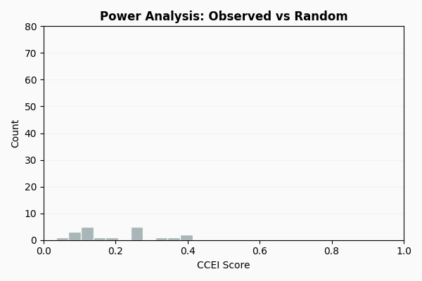

Tutorial 1: Budget-Based Analysis#
This tutorial analyzes 2 years of grocery data from 2,222 households using revealed preference methods.
Topics covered:
Data preparation and BehaviorLog construction
GARP consistency testing
Power analysis (Bronars test)
Efficiency metrics (CCEI, MPI, Houtman-Maks)
Preference structure (separability, cross-price effects)
Lancaster characteristics model
Prerequisites#
Python 3.10+
Basic familiarity with NumPy and pandas
Understanding of basic statistics (means, correlations)
Note
The full code for this tutorial is available in the case_studies/dunnhumby/ directory
of the PrefGraph repository.
Important Assumptions#
Revealed preference tests rely on several core assumptions regarding the stability and rationality of decision-making. For a formal delineation of these assumptions and their implications, see:
Theoretical Foundations — Formal assumptions (Stability, Utility Maximization, etc.)
Real data typically violates these to some degree, which affects interpretation:
Assumption |
Grocery Data Reality |
Concern Level |
|---|---|---|
Stable preferences |
Household tastes change over 2 years |
Medium |
Single decision-maker |
Household, not individual |
Medium |
Category homogeneity |
“Milk” aggregates all milk products |
Medium |
What GARP Failure Means#
GARP failure means no single, stable utility function rationalizes the observed choices. For common causes and behavioral interpretations, see Axiomatic Consistency Tests.
Part 1: The Data#
The Dunnhumby “The Complete Journey” dataset contains 2 years of grocery transactions from approximately 2,500 households. We focus on 10 product categories.
Metric |
Value |
|---|---|
Households analyzed |
2,222 |
Product categories |
10 (Soda, Milk, Bread, Cheese, Chips, Soup, Yogurt, Beef, Pizza, Lunchmeat) |
Time period |
2 years |
Aggregation |
Monthly (24 observations per household) |
Aggregation Choice#
Transactions are aggregated to monthly observations:
Weekly data is too sparse (many zero-purchase periods)
Monthly aligns with household budgeting cycles
Reduces noise from random shopping timing
pip install prefgraph[viz]
# Download the Dunnhumby dataset (requires Kaggle API)
cd dunnhumby && ./download_data.sh
Part 2: Building BehaviorLogs#
A BehaviorLog stores a sequence of choice observations:
Prices: Price vector at time of choice
Quantities: Quantity vector chosen
import numpy as np
from prefgraph import BehaviorLog
# For a single household: 24 months, 10 products
prices = np.array([
[2.50, 3.20, 2.10, 4.50, 3.00, 1.80, 2.90, 8.50, 5.00, 6.20], # Month 1
[2.45, 3.30, 2.15, 4.40, 2.90, 1.85, 3.00, 8.20, 5.10, 6.00], # Month 2
# ... more months
])
quantities = np.array([
[2.0, 1.5, 3.0, 0.5, 1.0, 2.0, 1.0, 0.5, 0.0, 0.5], # Month 1
[1.5, 2.0, 2.5, 0.5, 1.5, 1.5, 1.0, 0.5, 1.0, 0.0], # Month 2
# ... more months
])
log = BehaviorLog(
cost_vectors=prices,
action_vectors=quantities,
user_id="household_123"
)
print(f"Observations: {log.num_records}") # 24
print(f"Products: {log.num_goods}") # 10
Output:
Observations: 24
Products: 10
Price Imputation#
For zero-purchase categories, impute prices using market medians:
def build_behavior_log(transactions_df, household_id, categories, price_oracle):
"""Transform transactions to BehaviorLog format."""
hh_df = transactions_df[transactions_df['household_id'] == household_id]
hh_df['period'] = hh_df['date'].dt.to_period('M')
# Build quantity matrix
quantities = hh_df.pivot_table(
index='period',
columns='category',
values='quantity',
aggfunc='sum',
fill_value=0
)
# Build price matrix: user's price if purchased, oracle otherwise
prices = pd.DataFrame(index=quantities.index, columns=categories)
for period in quantities.index:
for cat in categories:
if quantities.loc[period, cat] > 0:
mask = (hh_df['period'] == period) & (hh_df['category'] == cat)
prices.loc[period, cat] = hh_df[mask]['price'].median()
else:
prices.loc[period, cat] = price_oracle.loc[period, cat]
return BehaviorLog(
cost_vectors=prices.values,
action_vectors=quantities.values,
user_id=household_id
)
Part 3: Testing Consistency (GARP)#
The Generalized Axiom of Revealed Preference (GARP) tests whether choices can be explained by a utility function. Choosing bundle A when B was affordable reveals A ≿ B. GARP checks whether these revealed preferences form a consistent (acyclic) ordering.
from prefgraph import validate_consistency
# Test a single household
result = validate_consistency(log)
if result.is_consistent:
print("GARP satisfied — a utility function exists")
else:
print(f"GARP violated — {result.num_violations} contradictions found")
Output (typical for one household):
GARP violated — 18 contradictions found
Full Summary Report#
For detailed diagnostics, use the .summary() method:
print(result.summary())
================================================================================
GARP CONSISTENCY REPORT
================================================================================
Status: CONSISTENT
Metrics:
-------
Consistent ......................... Yes
Violations ........................... 0
Observations ......................... 2
Interpretation:
--------------
Behavior is consistent with utility maximization.
No revealed preference cycles detected.
Computation Time: 0.23 ms
================================================================================
Testing All Households#
consistent_count = 0
for household_id, session_data in sessions.items():
result = validate_consistency(session_data.behavior_log)
if result.is_consistent:
consistent_count += 1
total = len(sessions)
print(f"GARP pass rate: {consistent_count}/{total} ({100*consistent_count/total:.1f}%)")
Output:
GARP pass rate: 100/2222 (4.5%)
Typical GARP pass rates for field data range from 5-15%, reflecting assumption violations over long time horizons (see Important Assumptions).
Part 3a: Lenient Consistency (Acyclical P)#
When GARP fails, it may be due to strict preference cycles or merely weak preference violations. The Acyclical P test distinguishes these cases by only checking strict preferences.
from prefgraph import validate_strict_consistency
result = validate_strict_consistency(log)
if result.is_consistent:
if result.garp_consistent:
print("Fully GARP consistent")
else:
print("Approximately rational: only weak preference violations")
else:
print(f"Strict preference cycles found: {len(result.violations)}")
Output (typical household that fails GARP):
Approximately rational: only weak preference violations
Interpretation#
Scenario |
GARP |
Acyclical P |
|---|---|---|
Strict preference cycles |
Fails |
Fails |
Only weak violations |
Fails |
Passes |
No violations |
Passes |
Passes |
Use this test when:
GARP fails narrowly and you want to know if violations are “close calls”
You believe bundles at similar expenditure levels may be indifferent
You want to allow for small measurement error in prices/quantities
# Detailed analysis
print(f"Strict preferences: {result.num_strict_preferences}")
print(f"GARP would pass: {result.garp_consistent}")
if result.violations:
print(f"Strict cycle example: {result.violations[0]}")
Part 4: Assessing Test Power#
The Bronars (1987) test assesses whether GARP has discriminative power by simulating random behavior on the same budgets and measuring violation rates.
from prefgraph import compute_test_power
# Test power for a sample of households
power_scores = []
for household_id in sample_households:
log = sessions[household_id].behavior_log
result = compute_test_power(log, n_simulations=500)
power_scores.append(result.power_index)
print(f"Mean Bronars power: {np.mean(power_scores):.3f}")
Output:
Mean Bronars power: 0.942
Interpreting Power#
Power |
Interpretation |
|---|---|
> 0.90 |
Random behavior almost always violates GARP |
0.70 - 0.90 |
GARP results are informative |
0.50 - 0.70 |
Limited discriminative power |
< 0.50 |
GARP cannot distinguish consistent from random behavior |
With 24 observations and 10 goods, power typically exceeds 0.90.
Detailed Bronars Power Analysis#
For deeper analysis, use the full result object which includes simulation details:
from prefgraph import compute_test_power
result = compute_test_power(log, n_simulations=1000)
print(f"Power Index: {result.power_index:.3f}")
print(f"Statistically Significant: {result.is_significant}")
print(f"Random violations: {result.n_violations}/{result.n_simulations}")
print(f"Mean integrity of random: {result.mean_integrity_random:.3f}")
Output:
Power Index: 0.942
Statistically Significant: True
Random violations: 942/1000
Mean integrity of random: 0.723
The mean_integrity_random shows the average efficiency score (AEI/CCEI)
of randomly generated behavior. If your household’s CCEI is much higher
than this baseline, it strongly suggests non-random behavior.
For faster computation (without AEI tracking), use:
from prefgraph import compute_test_power_fast
result = compute_test_power_fast(log, n_simulations=5000)
print(f"Power: {result.power_index:.3f}")
Part 5: Measuring Efficiency (CCEI)#
The Critical Cost Efficiency Index (CCEI), also called the Afriat Efficiency Index, quantifies the degree of GARP violation. A CCEI of 1.0 indicates perfect consistency; lower values indicate larger budget adjustments needed to rationalize behavior.
from prefgraph import compute_integrity_score
ccei_scores = []
for household_id, session_data in sessions.items():
result = compute_integrity_score(session_data.behavior_log)
ccei_scores.append(result.efficiency_index)
print(f"Mean CCEI: {np.mean(ccei_scores):.3f}")
print(f"Median CCEI: {np.median(ccei_scores):.3f}")
print(f"CCEI ≥ 0.95: {np.mean(np.array(ccei_scores) >= 0.95)*100:.1f}%")
print(f"CCEI < 0.70: {np.mean(np.array(ccei_scores) < 0.70)*100:.1f}%")
Output:
Mean CCEI: 0.839
Median CCEI: 0.856
CCEI ≥ 0.95: 11.2%
CCEI < 0.70: 5.8%
Full Summary Report#
print(result.summary())
================================================================================
AFRIAT EFFICIENCY INDEX REPORT
================================================================================
Status: PERFECT (AEI = 1.0)
Metrics:
-------
Efficiency Index (AEI) .......... 1.0000
Waste Fraction .................. 0.0000
Perfectly Consistent ............... Yes
Binary Search Iterations ............. 0
Tolerance ................... 1.0000e-06
Interpretation:
--------------
Perfect consistency - behavior fully rationalized by utility maximization
Computation Time: 0.04 ms
================================================================================
Benchmark Comparison#
Metric |
Dunnhumby (Grocery) |
CKMS (Lab) |
|---|---|---|
GARP pass rate |
~5-15% |
22.8% |
Mean CCEI |
~0.80-0.85 |
0.881 |
Median CCEI |
~0.85-0.90 |
0.95 |
CCEI ≥ 0.95 |
~20-30% |
45.2% |
Lower consistency in field data reflects measurement noise, longer time horizons, and multiple decision-makers per household.
CCEI Interpretation#
CCEI |
Interpretation |
|---|---|
1.00 |
GARP satisfied |
0.95+ |
Minor deviations |
0.85-0.95 |
Typical for field data |
0.70-0.85 |
Substantial deviations |
< 0.70 |
Large deviations; verify data quality |
Part 6: Welfare Loss (MPI)#
The Money Pump Index (MPI) measures potential welfare loss from preference cycles (e.g., A ≻ B ≻ C ≻ A).
from prefgraph import compute_confusion_metric
mpi_scores = []
for household_id, session_data in sessions.items():
result = compute_confusion_metric(session_data.behavior_log)
mpi_scores.append(result.mpi_value)
print(f"Mean MPI: {np.mean(mpi_scores):.3f}")
Output:
Mean MPI: 0.218
Full Summary Report#
print(result.summary())
================================================================================
MONEY PUMP INDEX REPORT
================================================================================
Status: NO EXPLOITABILITY
Metrics:
-------
Money Pump Index (MPI) .......... 0.0000
Exploitability % ................ 0.0000
Number of Cycles ..................... 0
Total Expenditure .............. 31.7500
Interpretation:
--------------
No exploitability - choices are fully consistent
Computation Time: 0.02 ms
================================================================================
Mean MPI in this data is 0.2-0.25, with strong negative correlation to CCEI (r ≈ -0.85).
MPI |
Interpretation |
|---|---|
0 |
No preference cycles |
0.1-0.2 |
Minor cycles |
0.2-0.3 |
Moderate cycles |
> 0.3 |
Substantial cycles |
Houtman-Maks Index#
The Houtman-Maks Index measures the minimum fraction of observations to remove for GARP consistency.
from prefgraph import compute_minimal_outlier_fraction
result = compute_minimal_outlier_fraction(log)
print(f"Observations to remove: {result.fraction:.1%}")
Output (typical household):
Observations to remove: 12.5%
Full Summary Report#
print(result.summary())
================================================================================
HOUTMAN-MAKS INDEX REPORT
================================================================================
Status: FULLY CONSISTENT
Metrics:
-------
Fraction Removed ................ 0.0000
Fraction Consistent ............. 1.0000
Observations Removed ................. 0
Interpretation:
--------------
All observations are consistent - no removal needed.
Computation Time: 0.05 ms
================================================================================
CCEI, MPI, and Houtman-Maks capture different aspects of inconsistency.
Part 6a: Per-Observation Efficiency (VEI)#
While CCEI gives a single global efficiency score, Varian’s Efficiency Index (VEI) computes individual efficiency scores for each observation. This identifies which specific observations are problematic.
from prefgraph import compute_granular_integrity
result = compute_granular_integrity(log, efficiency_threshold=0.9)
print(f"Mean efficiency: {result.mean_efficiency:.3f}")
print(f"Worst observation: {result.worst_observation}")
print(f"Min efficiency: {result.min_efficiency:.3f}")
print(f"Problematic observations: {result.problematic_observations}")
Output:
Mean efficiency: 0.912
Worst observation: 14
Min efficiency: 0.723
Problematic observations: [7, 14, 21]
Use Cases#
Debugging: Find which time periods have inconsistent behavior
Outlier detection: Identify transactions to investigate
Time series analysis: Track when behavior changed
Data quality: Detect measurement errors or unusual events
# Investigate problematic observations
for obs_idx in result.problematic_observations:
efficiency = result.efficiency_vector[obs_idx]
print(f"Observation {obs_idx}: efficiency={efficiency:.3f}")
print(f" Prices: {log.cost_vectors[obs_idx]}")
print(f" Quantities: {log.action_vectors[obs_idx]}")
L2 Variant#
For applications where large deviations matter more than small ones, use the L2 variant which minimizes squared deviations:
from prefgraph import compute_granular_integrity_l2
result_l2 = compute_granular_integrity_l2(log)
print(f"L2 mean efficiency: {result_l2.mean_efficiency:.3f}")
Part 6b: Swaps Index#
The Swaps Index (Apesteguia & Ballester 2015) provides a more interpretable measure of inconsistency than CCEI. Instead of asking “how much budget waste rationalizes behavior?”, it asks “how many preference reversals are needed?”
from prefgraph import compute_swaps_index
result = compute_swaps_index(log)
print(f"Swaps needed: {result.swaps_count}")
print(f"Normalized (0-1): {result.swaps_normalized:.3f}")
print(f"Consistent: {result.is_consistent}")
Output (typical household):
Swaps needed: 3
Normalized (0-1): 0.011
Consistent: False
Interpretation#
The swaps index is more intuitive than CCEI:
CCEI = 0.92 means “need 8% budget waste to rationalize”
Swaps = 3 means “need to flip 3 preference pairs for consistency”
Swaps |
Interpretation |
|---|---|
0 |
GARP consistent |
1-3 |
Near-rational (minor inconsistencies) |
4-10 |
Moderate inconsistency |
> 10 |
Substantial inconsistency; verify data quality |
Identifying Which Pairs to Swap#
The result includes the specific observation pairs that cause violations:
if result.swap_pairs:
print("Preferences to reverse for consistency:")
for obs_i, obs_j in result.swap_pairs:
print(f" Observation {obs_i} vs {obs_j}")
This is useful for understanding where the inconsistencies occur—perhaps a few outlier periods drive all the violations.
Full Summary Report#
print(result.summary())
================================================================================
SWAPS INDEX REPORT
================================================================================
Status: INCONSISTENT (3 swaps needed)
Metrics:
-------
Swaps Count .......................... 3
Swaps Normalized ................. 0.0109
Max Possible Swaps ................. 276
Consistent ........................... No
Method .......................... greedy
Swap Pairs:
----------
(2, 14)
(7, 21)
(14, 19)
Interpretation:
--------------
3 preference reversals needed for GARP consistency.
This is a relatively low number, suggesting near-rational behavior.
Computation Time: 1.23 ms
================================================================================
Part 6c: Observation Contributions#
When GARP fails, which observations are responsible? Observation contributions (Varian 1990) identifies the “troublemakers”—useful for outlier detection and data quality analysis.
from prefgraph import compute_observation_contributions
result = compute_observation_contributions(log, method="cycle_count")
print(f"Base AEI: {result.base_aei:.3f}")
print(f"Most problematic observations:")
for obs_idx, contrib in result.worst_observations[:3]:
print(f" Observation {obs_idx}: {contrib:.1%} of violations")
Output:
Base AEI: 0.856
Most problematic observations:
Observation 14: 23.5% of violations
Observation 7: 18.2% of violations
Observation 21: 12.8% of violations
Methods#
Two methods are available:
Method |
Speed |
Use When |
|---|---|---|
|
Fast (O(n²)) |
Large datasets, quick diagnostics |
|
Slow (O(n³)) |
Small datasets, precise impact measurement |
The "removal" method computes how much AEI improves when each observation
is removed—this gives a direct measure of each observation’s impact:
result = compute_observation_contributions(log, method="removal")
print(f"Removal impact on AEI:")
for obs_idx, impact in list(result.removal_impact.items())[:3]:
print(f" Remove obs {obs_idx}: AEI improves by {impact:.3f}")
Use Cases#
Data quality: High-contribution observations may reflect measurement error
Outlier detection: Unusual shopping periods (holidays, stockpiling)
Time series analysis: Identify when preferences shifted
Sample selection: Remove problematic observations for cleaner analysis
# Investigate the worst observation
worst_idx = result.worst_observations[0][0]
print(f"Observation {worst_idx} details:")
print(f" Prices: {log.cost_vectors[worst_idx]}")
print(f" Quantities: {log.action_vectors[worst_idx]}")
print(f" Expenditure: ${np.dot(log.cost_vectors[worst_idx], log.action_vectors[worst_idx]):.2f}")
Full Summary Report#
print(result.summary())
================================================================================
OBSERVATION CONTRIBUTIONS REPORT
================================================================================
Status: ANALYSIS COMPLETE
Overview:
--------
Total Observations .................. 24
Base AEI ......................... 0.8560
Method ...................... cycle_count
Worst Contributors:
------------------
Observation 14 ................... 23.5%
Observation 7 .................... 18.2%
Observation 21 ................... 12.8%
Observation 3 ..................... 8.4%
Observation 18 .................... 7.1%
Interpretation:
--------------
Top 3 observations account for 54.5% of all violation participation.
Consider investigating these periods for data quality issues or
unusual purchasing patterns.
Computation Time: 2.45 ms
================================================================================
Part 7: Advanced Topics#
For more complex budget-based analysis, see the following specialized tutorials:
Tutorial 1a: Advanced Budget Analysis — Homotheticity, Lancaster characteristics model, and utility recovery.
Tutorial 4: Demand Analysis — Slutsky matrix, integrability, and additive separability.
Tutorial 3: Welfare Analysis — Welfare analysis (CV/EV) and deadweight loss.
Part 8: Unified Summary Display#
For comprehensive analysis in one command, use the BehavioralSummary class
which runs all tests and presents results in a unified format.
One-Liner Analysis#
from prefgraph import BehavioralSummary
# Run all tests with one command
summary = BehavioralSummary.from_log(log)
# Statsmodels-style text summary
print(summary.summary())
Output:
============================================================
BEHAVIORAL SUMMARY
============================================================
Data:
-----
Observations ............................ 24
Goods ................................... 10
Consistency Tests:
------------------
GARP ............................ [+] PASS
WARP ............................ [+] PASS
SARP ............................ [+] PASS
Goodness-of-Fit:
----------------
Afriat Efficiency (AEI) .......... 0.9500
Money Pump Index (MPI) ........... 0.0200
Interpretation:
---------------
Excellent consistency - minor noise or measurement error
Computation Time: 145.32 ms
============================================================
Quick Status Indicators#
For quick status checks, use short_summary():
# Quick one-liner status
print(summary.short_summary())
# Output: BehavioralSummary: [+] AEI=0.9500, MPI=0.0200
# Individual results also have short summaries
from prefgraph import validate_consistency, compute_integrity_score
garp = validate_consistency(log)
print(garp.short_summary())
# Output: GARP: [+] CONSISTENT
aei = compute_integrity_score(log)
print(aei.short_summary())
# Output: AEI: [+] 0.9500 (Excellent)
Note
In Jupyter notebooks, results display as styled HTML cards automatically. Just evaluate a result object in a cell to see rich formatting:
>>> result = validate_consistency(log)
>>> result # Displays as HTML card with pass/fail indicator
Part 9: Diagnostic Visualizations#
PrefGraph includes visualization functions for deeper analysis of behavioral consistency. These are useful for presentations, reports, and debugging.
CCEI Sensitivity Plot#
The plot_ccei_sensitivity() function shows how the efficiency index (CCEI/AEI)
improves as problematic observations are removed:
from prefgraph.viz import plot_ccei_sensitivity
import matplotlib.pyplot as plt
# How does AEI change as outliers are removed?
fig, ax = plot_ccei_sensitivity(log, max_remove=5)
plt.title("CCEI Sensitivity: Impact of Outlier Removal")
plt.show()
This visualization helps identify:
How many observations drive inconsistencies
The marginal improvement from removing each outlier
Whether a few observations cause most violations
Power Analysis Plot#
{kind=link}

The plot_power_analysis() function compares your data’s efficiency to
simulated random behavior:
from prefgraph.viz import plot_power_analysis
import matplotlib.pyplot as plt
# Compare observed CCEI to random behavior
fig, ax = plot_power_analysis(log, n_simulations=500)
plt.title("Power Analysis: Observed vs Random Behavior")
plt.show()
This visualization shows:
Distribution of CCEI for random choices (histogram)
Your observed CCEI (vertical line)
How far above random your behavior is
If your observed CCEI is well above the random distribution, it strongly suggests non-random, preference-driven behavior.
Part 10: Summary#
Key Findings#
Metric |
Typical Field Value |
|---|---|
GARP pass rate |
5-15% |
Mean CCEI |
0.80-0.85 |
Bronars power |
>0.90 |
Mean MPI |
0.2-0.25 |
Notes#
Compute power before interpreting GARP results
Report CCEI distribution, not just pass rates
Document aggregation choices
Compare to published benchmarks (e.g., CKMS 2014)
Function Reference#
Purpose |
Function |
|---|---|
GARP consistency |
|
Strict consistency (Acyclical P) |
|
CCEI / efficiency index |
|
Per-observation efficiency (VEI) |
|
Bronars power |
|
Money Pump Index |
|
Houtman-Maks Index |
|
Swaps Index |
|
Observation Contributions |
|
Behavioral Summary |
|
See Also#
Tutorial 6: E-Commerce at Scale — E-commerce application
API — API documentation
Axiomatic Consistency Tests — Mathematical foundations